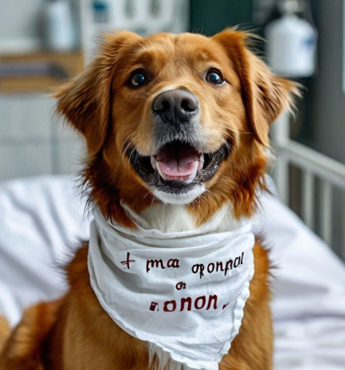
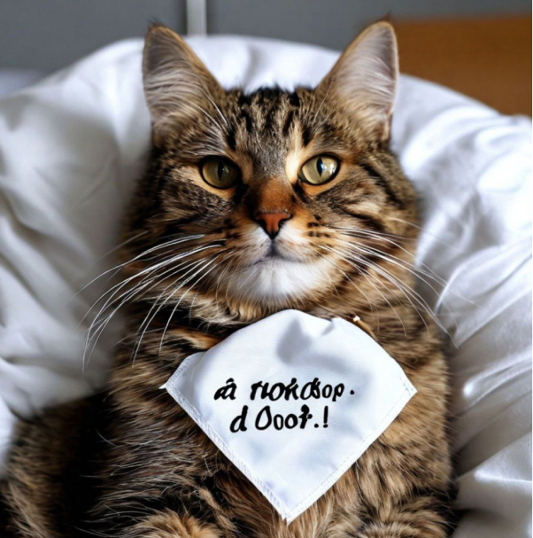

Информация о донорстве
Донорство животных — это благородный акт, который может спасти жизнь другому питомцу. Каждый здоровый четвероногий друг может стать героем, предоставив свою кровь в критический момент. Ваша поддержка помогает ветеринарам проводить необходимые процедуры и спасать жизни. Присоединившись к программе донорства, вы не только помогаете другим, но и укрепляете связь со своим питомцем. Давайте вместе сделаем мир лучше для наших братьев меньших!


ЗА УЧАСТИЕ В ДОНОРСТВЕ ВЛАДЕЛЕЦ И ПИТОМЕЦ
ПОЛУЧАЮТ БОНУСЫ:
Здоровье питомца: Регулярные медицинские осмотры перед донорством помогают выявить и предотвратить возможные проблемы со здоровьем.
Здоровье питомца: Регулярные медицинские осмотры перед донорством помогают выявить и предотвратить возможные проблемы со здоровьем.
Здоровье питомца: Регулярные медицинские осмотры перед донорством помогают выявить и предотвратить возможные проблемы со здоровьем.
Здоровье питомца: Регулярные медицинские осмотры перед донорством помогают выявить и предотвратить возможные проблемы со здоровьем.
Здоровье питомца: Регулярные медицинские осмотры перед донорством помогают выявить и предотвратить возможные проблемы со здоровьем.
Бесплатные анализы: Владельцы получают возможность пройти бесплатные анализы и обследования для своего питомца, что позволяет следить за его состоянием.
Финансовые преимущества: Владельцы могут получить скидки на ветеринарные услуги и препараты, что делает уход за питомцем более доступным.
Эмоциональное удовлетворение: Участие в донорстве приносит моральное удовлетворение от помощи другим животным, что укрепляет связь между владельцем и питомцем.
Стать донором:
ПОЛУЧИТЕ БЕСПЛАТНУЮ КОНСУЛЬТАЦИЮ:
Стать донором:
ПОЛУЧИТЕ БЕСПЛАТНУЮ КОНСУЛЬТАЦИЮ: